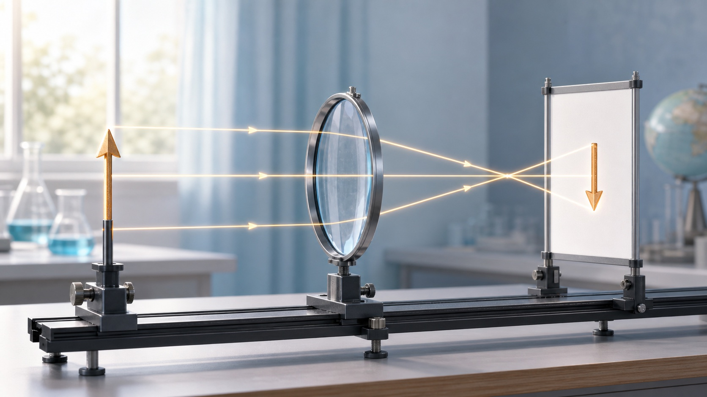

实像
实际光线真的会聚到像的位置，所以能成在光屏上。照相机、投影仪、眼睛视网膜上的像都属于实像。

第五章 · 透镜及其应用
第五章从凸透镜和凹透镜出发，研究焦点、焦距、成像规律，再把规律带回照相机、投影仪、放大镜、眼睛、显微镜和望远镜。
第 1-2 节
先分清透镜形状和对光的作用：中间厚边缘薄的是凸透镜，对光有会聚作用；中间薄边缘厚的是凹透镜，对光有发散作用。
凸透镜让平行光会聚到焦点，焦点是真实会聚的位置。
第 3 节
预习时先记住三条边界：2f、f、焦点以内。照相机、投影仪和放大镜对应的物距区间不同。
成像本质
判断像的性质，不只看正倒和大小，还要看实际光线是否到达像的位置。能被光屏承接的是实像；只能用眼睛看到、实际光线没有会聚到那里的，是虚像。
实际光线真的会聚到像的位置，所以能成在光屏上。照相机、投影仪、眼睛视网膜上的像都属于实像。
实际光线没有在像的位置会聚，只是人眼把进入眼睛的光线反向延长后，以为光从那里来。平面镜成像、放大镜成正立放大的像通常是虚像。
光线真到那里，就是实像；眼睛以为从那里来，就是虚像。
能用光屏接住的是实像；不能用光屏接住，只能通过眼睛观察到的是虚像。
第 4-5 节
眼睛像一架能自动调焦的照相机。晶状体和角膜共同相当于凸透镜，视网膜相当于光屏。近视和远视的区别，关键看像落在视网膜前还是视网膜后。
晶状体相当于凸透镜，视网膜相当于光屏，成倒立、缩小的实像。
近视眼会聚能力偏强，或眼球前后方向偏长，远处物体成像在视网膜前方，需要凹透镜先发散光线。
远视眼会聚能力偏弱，或眼球前后方向偏短，近处物体成像在视网膜后方，需要凸透镜先会聚光线。
多个透镜组合能让微小物体或远处物体更容易被看清。
远处物体来的光近似平行。眼睛折光太强或眼球太长时，光线提前会聚，像落在视网膜前。
近处物体来的光更发散。眼睛折光太弱或眼球太短时，光线还没会聚就到达视网膜，像落在视网膜后。
近视：前、凹、发散。远视：后、凸、会聚。
像太靠前，就先用凹透镜把光线发散一点；像太靠后，就先用凸透镜把光线会聚一点。
作图与项目专项
凸透镜题常把作图、焦距测量、手机投影仪放在一起考。先定焦距和物距，再判断像的大小、正倒和屏幕位置。
平行于主光轴的光线，经凸透镜折射后通过另一侧焦点。
从焦点射向凸透镜的光线，折射后平行于主光轴。
经过光心的光线，传播方向通常不改变，是作图时最稳的一条辅助线。
成实像时遵循“物近像远像变大”：手机靠近透镜，投影仪远离屏幕。
选择折射后的光线走向
先看入射光线和光心、焦点的位置，再选择折射后的走向。
第五章检查
完成下面 11 题，检查会聚发散、焦距、成像规律、近视远视、作图和投影仪调试。